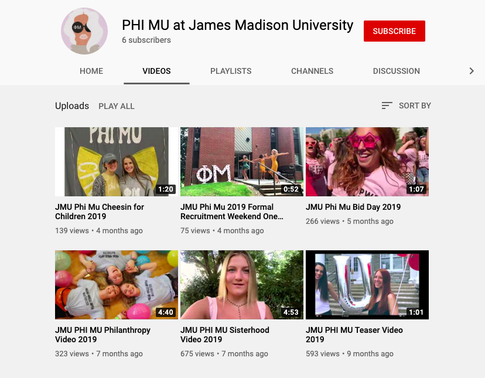

i like to help companies stand out.
In my time on this planet, I've had incredible opportunities to work with multiple companies and organizations. I have much experience in rebranding company logos and designs as well as creating marketing videography for organization recruitment purposes. Below are some of the companies I have worked with and what I have done with them.
The University Outpost Bookstore
I have been working for the University Outpost Bookstore down in Harrisonburg, Virginia for the past year. I am the Director of Social Media and Marketing Development, for I am responsible for managing the company's social media accounts as well as creating graphics such as web banners, window posters, business cards, email blasts and social media posts.

Bluestone Communications
I have been a Creative Director for the student-run PR firm here at JMU, Bluestone Communications, for the past semester. I served on the Shenandoah Valley Electric Cooperative account last semester, where we had the opportunity to redesign and create deliverables such as program logos, brochure designs and a brand book. This semester I will be serving on the JMU School of Communications account team.

Phi Mu
I have had the absolute privilege of serving my chapter of Phi Mu for the past year as the Historian Chairman. I am responsible for the preproduction, production and postproduction of the Formal Recruitment videos and other documentation media for the Gamma Theta chapter. I have been blessed with holding the position for the second year in a row now and am beginning to plan the next set of recruitment videos for this upcoming August.

call me, let's work together.
I want to work with you to make your design dreams come true. Text or give me a call at 703-999-3750, or send me an email me at siskemma15@gmail.com. Let's talk, I think we'll work well together.